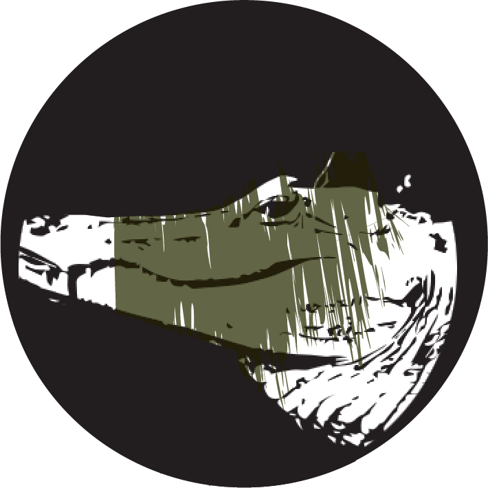
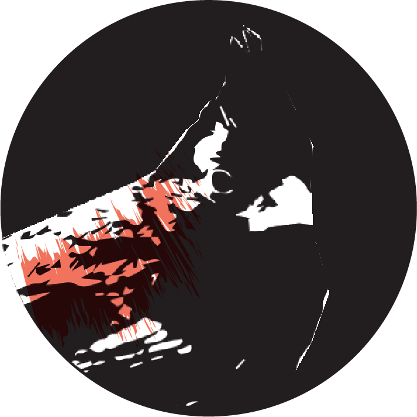
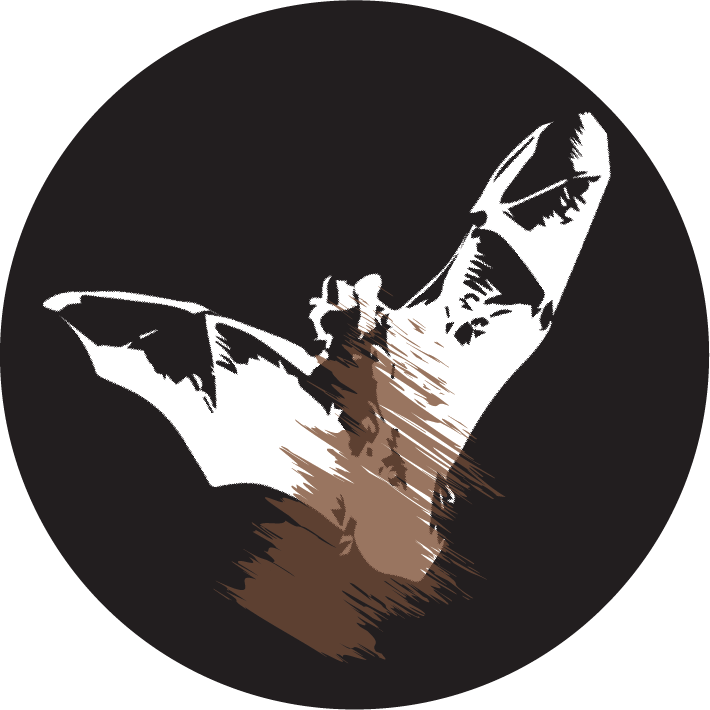

SWAMP SYMPHONY
Start Over
Drag and drop to create your symphony!
Tap an animal to add it to your symphony!
Move the slider right or left to adjust volume.
Belted Kingfisher
Red Shouldered Hawk
Green Tree Frog
Heavy Rain

Fakahatchee Gator

Northern Cardinal
Northern Yellow Bat
Great Crested Flycatcher
Southern Leopard Frog

Tricolored Bat
Thanks to CREW Land and Water Trust in the Corkscrew Regional Watershed for sharing these swamp sounds with us.